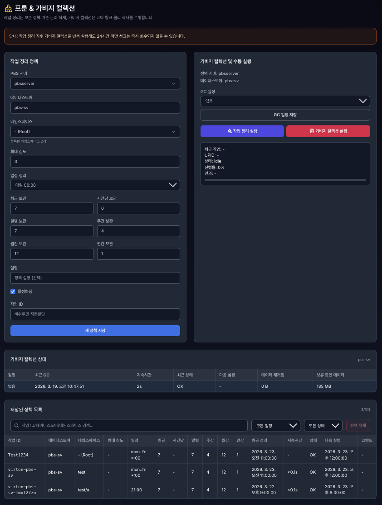
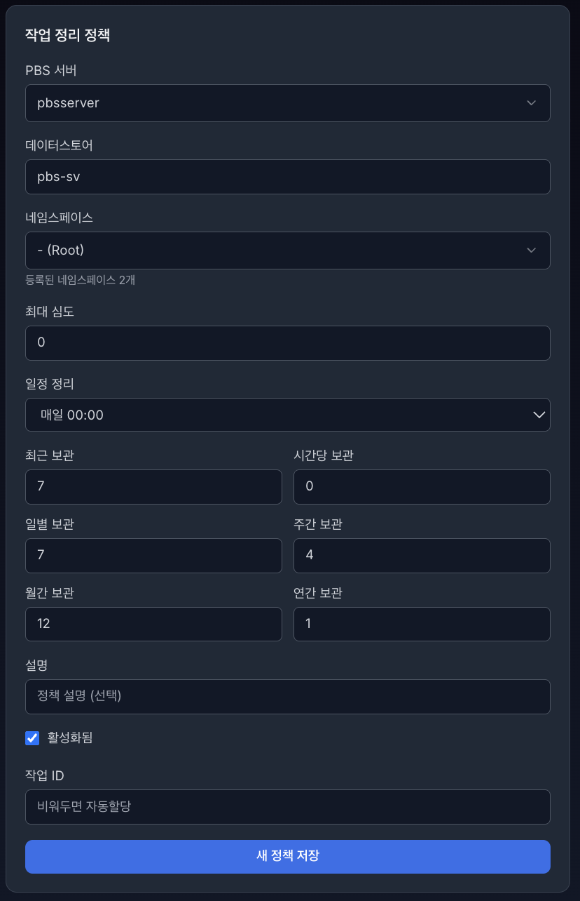
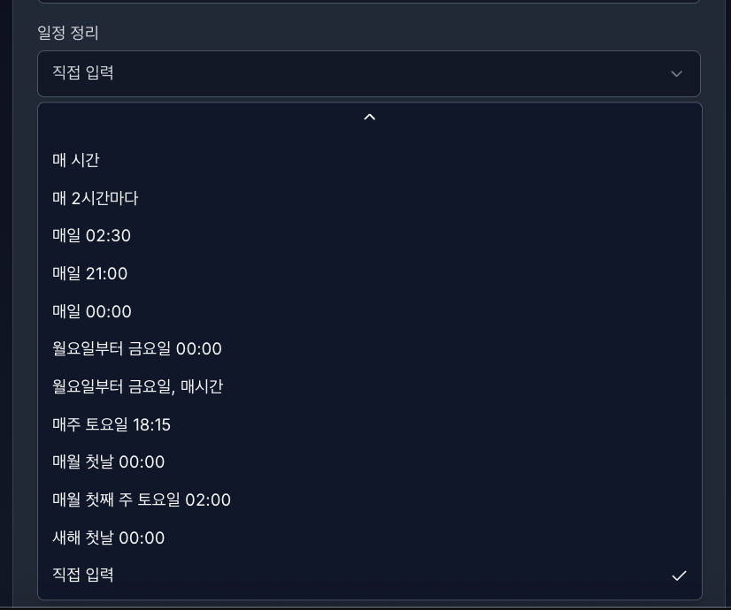
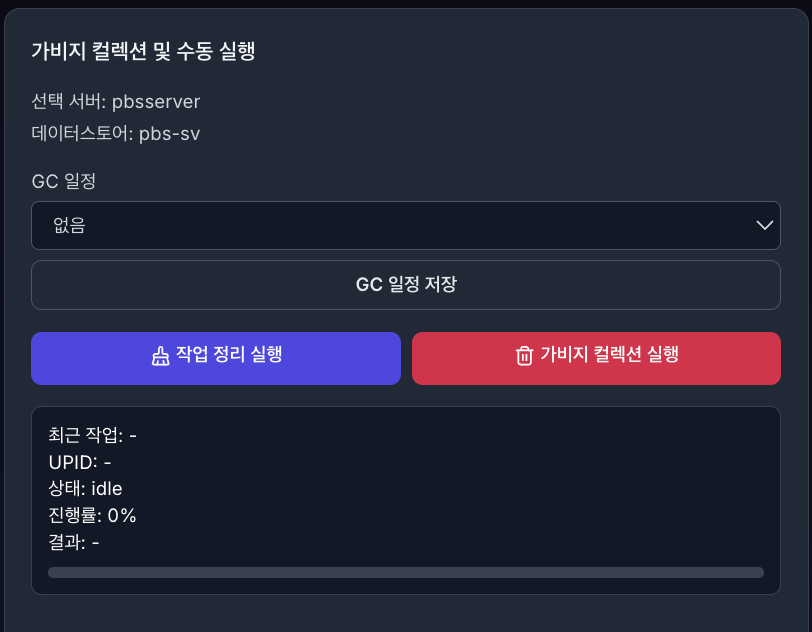
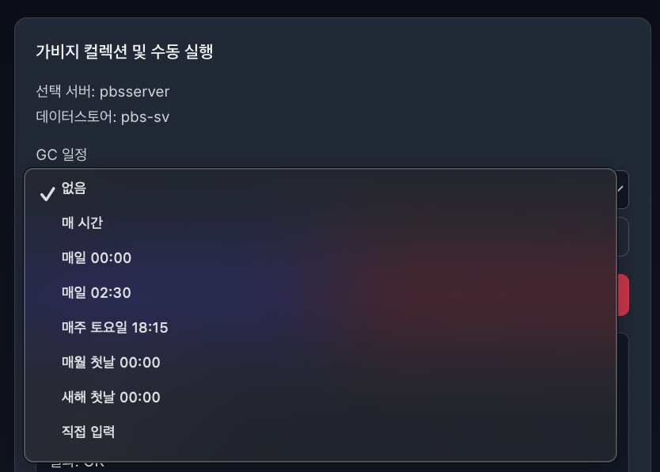
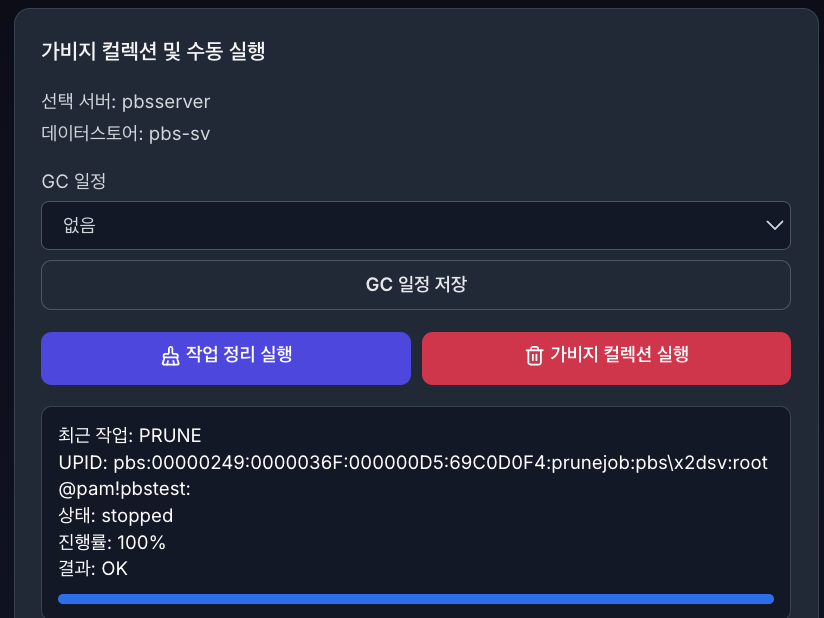
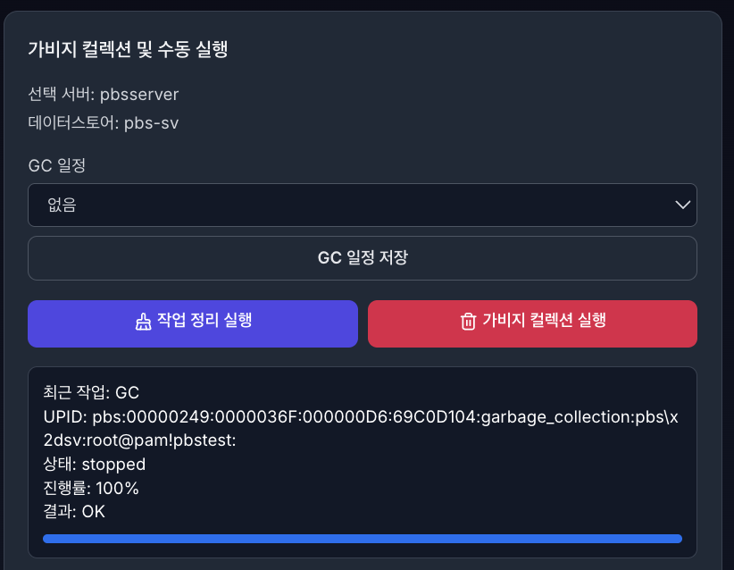
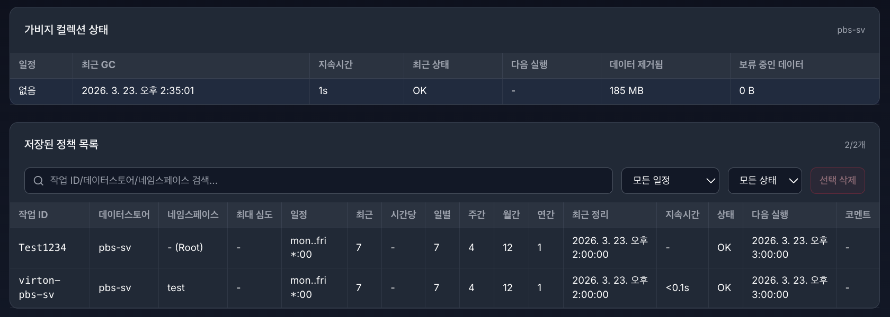
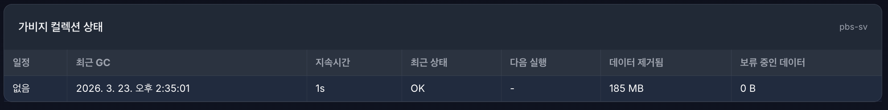
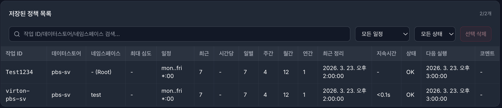

6. PBS 프룬 & 가비지 컬렉션 (Prune & Garbage Collection)#

프룬 (Prune)
정의: 설정된 ‘보존 정책(Retention Policy)’에 따라 보관 기간이 만료되었거나 불필요해진 백업 스냅샷(인덱스)의 연결을 끊고 목록에서 지우는 작업입니다.
가비지 컬렉션 (Garbage Collection)
정의: 프룬 작업으로 인해 더 이상 어떤 백업 스냅샷에서도 참조하지 않는(이름표가 모두 떨어진) 실제 데이터 조각(Chunk)들을 디스크에서 찾아 물리적으로 삭제하는 작업입니다.
6.1 작업 정리(Prune) 정책 기능#

목적
PBS 백업 보존 정책(Retention Policy)을 등록/수정/삭제하고, 필요 시 즉시 실행하기 위한 기능입니다.
핵심 동작
정책 저장: PBS prune job 설정을 생성/갱신
정책 목록 조회: 저장된 prune 정책 테이블 표시
정책 선택: 선택한 정책을 폼에 로드(수정 모드)
정책 삭제: 선택 정책 삭제
수동 실행: 선택 정책 기준으로 prune 즉시 실행
상태 확인: 최근 정리 시각/상태/다음 실행 등을 조회
6.1.1 입력 항목별 설명#
PBS 서버
대상 PBS 연결 서버 선택
서버 목록은 등록된 PBS 연결 설정 기반으로 로드
데이터스토어
prune 대상 datastore
선택 서버의 기본 datastore가 초기값으로 반영
네임스페이스
prune 적용 범위 namespace 지정
비우면 Root(- (Root)) 기준
최대 심도 (max-depth)
namespace 하위 탐색 깊이
0이면 현재 namespace 기준 동작

일정 정리 (schedule)
cron/preset 스케줄
예: hourly, daily, 02:30, mon..fri *:00
보존 개수(Keep 정책)
최근 보관 (keep-last)
시간당 보관 (keep-hourly)
일별 보관 (keep-daily)
주간 보관 (keep-weekly)
월간 보관 (keep-monthly)
연간 보관 (keep-yearly)
각 조건에 맞는 스냅샷을 남기고 나머지는 prune 대상이 됨
설명 (comment)
운영 메모/정책 설명 텍스트
활성화됨 (enabled)
체크 시 스케줄 활성
해제 시 정책은 남고 실행은 비활성
작업 ID (id)
정책 고유 식별자
비우면 자동 생성
수정 모드에서는 고정(식별자 변경 방지)
5.1.2 모드 동작#
생성 모드
새 정책 저장
작업 ID 직접 입력 가능(또는 자동할당)
수정 모드
기존 정책 값 로드 후 변경사항 저장
작업 ID는 읽기 전용
수정 취소 시 생성 모드로 복귀
6.1.3 실행/운영 포인트#
Prune 실행
논리적 정리(참조 제거) 중심
디스크 용량 즉시 회수는 제한적일 수 있음
GC와 관계
실제 물리 용량 회수는 GC 단계에서 수행
보통 Prune -> GC 순서 운영 권장
주의
정책값이 공격적으로 설정되면 복구 지점이 급감할 수 있으므로, 운영 기준(일/주/월/년)을 먼저 정하고 적용하는 것이 안전합니다.
6.2 가비지 컬렉션(Garbage Collection) 및 수동 실행 기능#

목적
GC 스케줄을 설정/저장하고, 필요 시 작업 정리(Prune) 또는 가비지 컬렉션(GC)를 즉시 수동 실행합니다.
핵심 동작
GC 일정 저장: datastore 기준 GC 스케줄 등록/수정
수동 실행:
작업 정리 실행(Prune 즉시 실행)
가비지 컬렉션 실행(GC 즉시 실행)
실행 추적: UPID 기반 상태/진행률/결과를 실시간 표시(SSE)
6.2.1 입력/표시 항목별 설명#
선택 서버
현재 대상 PBS 서버 표시(읽기용)
데이터스토어
GC/수동 실행 대상 datastore 표시(읽기용)

GC 일정
프리셋(없음, hourly, daily, 02:30 등) 또는 직접 입력 선택
직접 입력 선택 시 크론/프리셋 문자열 직접 입력
GC 일정 저장 버튼
현재 GC 일정 값을 PBS에 저장
없음 선택 시 스케줄 제거(비활성)
6.2.2 수동 실행 버튼#
작업 정리 실행
저장된 prune 정책(작업 ID 기준)으로 즉시 실행
정책 선택/ID가 없으면 실행 차단
가비지 컬렉션 실행
현재 datastore 대상으로 GC 즉시 실행
실행 후 GC 상태 섹션 재조회


6.2.3 실행 상태 카드(최근 작업)#
최근 작업
PRUNE 또는 GC
UPID
PBS 작업 고유 식별자
상태 조회/스트림 추적의 기준 값
상태
idle, running, stopped 등
진행률
로그 파싱/SSE 기반 퍼센트 표시
결과
OK 또는 실패 코드(exitstatus)
진행 바
0~100% 시각화
6.2.4 동작 흐름#
서버/데이터스토어 기준으로 대상 확정
필요 시 GC 일정 저장
수동 실행(PRUNE 또는 GC)
UPID 수신 후 SSE 스트림 구독
진행률/상태/결과 갱신
완료 시 토스트 + GC 상태 재동기화
6.2.5 운영 주의사항#
Prune ≠ 즉시 용량 회수
prune은 논리 정리, 실제 공간 회수는 GC 단계에서 반영 합니다.
24시간 미만 청크
GC 반복 실행해도 즉시 회수되지 않을 수 있습니다.
부하 관리
백업/동기화 시간대와 GC 시간대 분리 권장 합니다.
I/O 경합이 큰 환경에서는 수동 GC 남발 지양합니다.
6.3 가비지 컬렉션 상태 및 저장된 작업 정리 정책 목록#


6.3.1 가비지 컬렉션 상태 (GC Status)#
목적
현재 데이터스토어의 GC 실행 결과와 다음 실행 예정 정보를 한눈에 확인합니다.
표시 항목
일정: GC 스케줄(cron/preset)
최근 GC: 마지막 GC 실행 시각
지속시간: 마지막 GC 작업 소요 시간
최근 상태: 마지막 실행 결과(OK, ERROR 등)
다음 실행: 다음 예약 실행 시각
데이터 제거됨: 마지막 GC에서 실제로 회수된 용량
보류 중인 데이터: 아직 회수되지 않은 후보 데이터 용량
동작 방식
서버/데이터스토어 선택값 기준으로 상태를 조회합니다.
GC 수동 실행 완료 후 상태 테이블이 최신 값으로 갱신됩니다.
운영 포인트
데이터 제거됨이 0이어도 비정상은 아닙니다(보존/유예 조건 영향).
보류 중인 데이터가 지속 증가하면 스케줄/보존정책을 점검해야 합니다.

6.3.2 저장된 정책 목록 (Saved Prune Policy List)#
목적
등록된 작업 정리 정책(Prune Job)들을 검색/필터/선택/수정/삭제하기 위한 관리 테이블입니다.
핵심 기능
검색: 작업 ID/데이터스토어/네임스페이스 기준 빠른 검색
필터: 일정/상태 기준 목록 축소
행 선택: 선택된 정책을 폼에 로드해 수정 모드 진입
선택 삭제: 선택한 정책을 삭제(확인 다이얼로그 기반)
표시 컬럼
작업 ID, 데이터스토어, 네임스페이스, 최대 심도
일정, 최근/시간당/일별/주간/월간/연간 보존
최근 정리, 지속시간, 상태, 다음 실행, 코멘트
동작 방식
목록 데이터는 PBS 정책 조회 결과를 기준으로 렌더링됩니다.
행 선택 시 폼은 수정 모드로 전환되고, 취소 시 생성 모드로 복귀합니다.
운영 포인트
정책 저장/수정/삭제 후 목록을 즉시 재조회해 화면-실제 상태를 일치시킵니다.
Root 네임스페이스는 UI에서 -(Root)로 표기해 식별성을 유지합니다.
6.3.3 권장 확인 순서 (실무 기준)#
GC 상태에서 최근 상태와 최근 GC 정상 여부 확인
저장 정책 목록에서 대상 정책의 일정/보존값 검토
필요 시 정책 수정 후 수동 실행(Prune → GC)
실행 후 데이터 제거됨, 보류 중인 데이터, 작업 이력 로그까지 확인